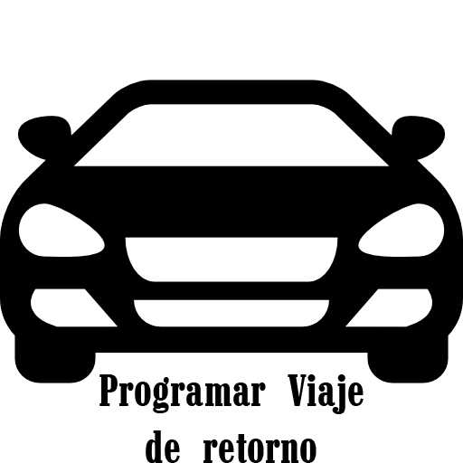

<ion-header>
  <ion-toolbar color="primary">
    <ion-buttons slot="start">
      <ion-title>Menu Principal</ion-title>
    </ion-buttons>
    <ion-title></ion-title>
  </ion-toolbar>
</ion-header>
<ion-content [fullscreen]="true">

<div id="container">
  <ion-button style="width : 50% ; height : 50%" color="tertiary">
    
    <br>
    <p>Programar Viaje de Retorno</p>
  </ion-button>
</div>
</ion-content>
<app-footer></app-footer>